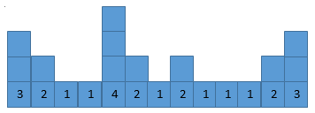
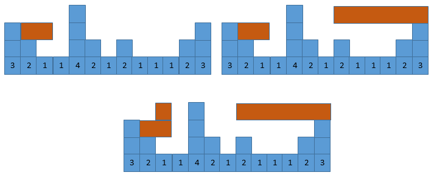

Cô bò Bessice rất thích trò chơi điện tử đặc biệt là trò chơi xếp gạch Tetris. Cô đưa yêu sách muốn nông dân John phải mua cho cô máy điện tử để giải trí, nếu không cô sẽ xúi giục các con bò khác nổi loạn. Để tránh một cuộc biểu tình do Bessice đứng đầu, FJ đành phải chiều lòng cô, ông mua cho cô máy điện tử xếp hình chỉ có 2 thanh thẳng đứng và nằm ngang vì tay cô bò chỉ có 2 móng.
Có máy điện tử, ngày cô bò đi ăn cỏ, lấy sữa, tối về lại tụ tập các con bò khác sang chuồng mình để chơi. Tại lần chơi này, cô thấy trên màn hình đã có sẵn N thanh thẳng đứng xếp sát nhau đánh chỉ số từ 1 đến N, các thanh có độ cao là H1, H2, …, HN.

Phía trên của màn hình xuất hiện lần lượt M thanh nằm ngang, mỗi thanh có độ dài lần lượt là L1, L2, …, LM. Các thanh xuất hiện được xác định tọa độ của mép bên trái thanh đó là vị trí P1, P2, …, PM. Khi một thanh rơi xuống và mép dưới thanh tiếp xúc với một cột nào đó thì mới xuất hiện thanh tiếp theo trên màn hình.
Bạn hãy giúp Bessice xác định xem độ cao của mỗi thanh ngang khi nó tiếp xúc với một cột nào đó trên màn hình.
Dữ liệu nhập:
- Dòng 1 chứa hai số N và M (1 ≤ N, M ≤ 105)
- Dòng 2 chứa N số nguyên không âm H1, H2, …, HN (1 ≤ Hi ≤ 109)
- M dòng tiếp theo mỗi dòng chứa 2 số Pi và Li (1 ≤ Pi, Li ≤ 105) – là vị trí xuất hiện và chiều dài của thanh thứ i.
Dữ liệu xuất:
- M dòng, mỗi dòng i là độ cao của thanh ngang thứ i khi rơi xuống.
Giải thích:
